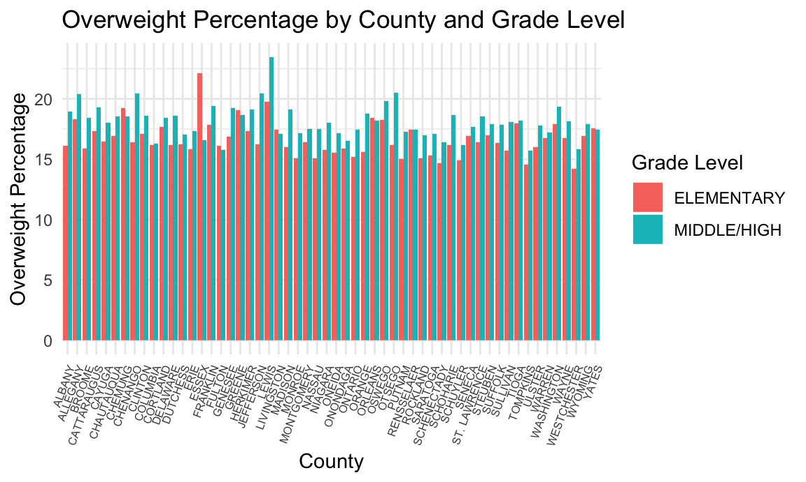
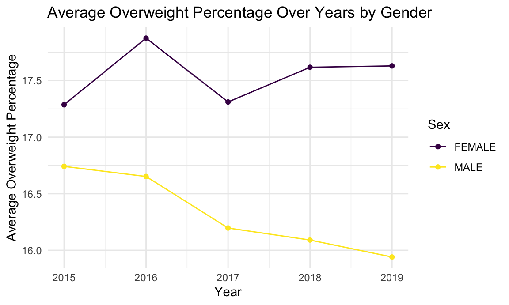

Data Visualization
NEEDS TO HIDE CODE LATER, ONLY DISPLAY INTERPRETATION!
library(tidyverse)
library(plotly)##
## Attaching package: 'plotly'## The following object is masked from 'package:ggplot2':
##
## last_plot## The following object is masked from 'package:stats':
##
## filter## The following object is masked from 'package:graphics':
##
## layoutcleaned_data = read_csv("cleaned_data.csv")## Rows: 4800 Columns: 26## ── Column specification ──────────────────────────────────────────────────────────────
## Delimiter: ","
## chr (3): county, sex, grade_level
## dbl (23): district, year, number_overweight, percent_overweight, number_obes...
##
## ℹ Use `spec()` to retrieve the full column specification for this data.
## ℹ Specify the column types or set `show_col_types = FALSE` to quiet this message.knitr::opts_chunk$set(
fig.width = 6,
fig.asp = .6,
out.width = "90%"
)
theme_set (theme_minimal() +theme(legend.position = "bottom"))
options(
ggplot2.continuous.colour = "viridis",
ggplots.continuous.fill = "viridis"
)
scale_colour_discrete = scale_colour_viridis_d
scale_fill_disrete = scale_fill_viridis_doverweight percentage changes over year
# add up each county's percentage for each year
county_year_data =
cleaned_data |>
group_by (county, year) |>
summarize(ave_overweight_percent = mean(percent_overweight)) ## `summarise()` has grouped output by 'county'. You can override using the `.groups`
## argument.ggplot(county_year_data, aes(x = year, y = ave_overweight_percent, group = county, color = county )) +
geom_line() +
geom_point() +
labs(title = "Average Overweight Percentage Over Time",
x = "Year",
y = "Average Overweight Percentage") +
theme_minimal() +
theme(legend.position = "none")
interpretation: This plot looks messy, needs to think about it
later
County level number of percent overweight/obese/healthy
# calculate the average percentage of overweight/obsed/healthy for all years
county_ave_data =
cleaned_data |>
group_by (county) |>
summarize(ave_overweight_percent = mean(percent_overweight),
ave_obese_percent = mean(percent_obese),
ave_healthy_percent = mean(percent_healthy_weight)*100)
plot_ly(county_ave_data, x = ~county, y = ~ave_overweight_percent, type = 'bar', color = ~county) |>
layout(title = "Percentage Overweight by County",
xaxis = list(title = "County"),
yaxis = list(title = "Average Percentage Overweight"),
showlegend = FALSE,
xaxis = list(tickangle = -60))## Warning in RColorBrewer::brewer.pal(N, "Set2"): n too large, allowed maximum for palette Set2 is 8
## Returning the palette you asked for with that many colors
## Warning in RColorBrewer::brewer.pal(N, "Set2"): n too large, allowed maximum for palette Set2 is 8
## Returning the palette you asked for with that many colorsplot_ly(county_ave_data, x = ~county, y = ~ave_obese_percent, type = 'bar', color = ~county) |>
layout(title = "Percentage Obese by County",
xaxis = list(title = "County"),
yaxis = list(title = "Average Percentage Obese"),
showlegend = FALSE,
xaxis = list(tickangle = -60))## Warning in RColorBrewer::brewer.pal(N, "Set2"): n too large, allowed maximum for palette Set2 is 8
## Returning the palette you asked for with that many colors
## Warning in RColorBrewer::brewer.pal(N, "Set2"): n too large, allowed maximum for palette Set2 is 8
## Returning the palette you asked for with that many colorsplot_ly(county_ave_data, x = ~county, y = ~ave_healthy_percent, type = 'bar', color = ~county) |>
layout(title = "Percentage Healthy by County",
xaxis = list(title = "County"),
yaxis = list(title = "Average Percentage Healthy"),
showlegend = FALSE,
xaxis = list(tickangle = -60))## Warning in RColorBrewer::brewer.pal(N, "Set2"): n too large, allowed maximum for palette Set2 is 8
## Returning the palette you asked for with that many colors
## Warning in RColorBrewer::brewer.pal(N, "Set2"): n too large, allowed maximum for palette Set2 is 8
## Returning the palette you asked for with that many colorsInterpretation:
elementary and middle school overweight across county
element_middle_data =
cleaned_data |>
group_by (county, grade_level) |>
filter(grade_level == "ELEMENTARY" | grade_level == "MIDDLE/HIGH") |>
summarize(ave_overweight_percent = mean(percent_overweight),
ave_obese_percent = mean(percent_obese),
ave_healthy_percent = mean(percent_healthy_weight)*100) ## `summarise()` has grouped output by 'county'. You can override using the `.groups`
## argument.# display and compare elementary and middle/high overweight data
ggplot(element_middle_data, aes(x = county, y = ave_overweight_percent, fill = grade_level)) +
geom_bar(stat = "identity", position = "dodge") +
labs(title = "Overweight Percentage by County and Grade Level",
x = "County",
y = "Overweight Percentage",
fill = "Grade Level") +
theme_minimal() +
theme(axis.text.x = element_text(angle = 90, hjust = 1))
sex and overweight
sex_data =
cleaned_data |>
group_by (sex, year) |>
summarize(ave_overweight_percent = mean(percent_overweight),
ave_obese_percent = mean(percent_obese),
ave_healthy_percent = mean(percent_healthy_weight)*100) ## `summarise()` has grouped output by 'sex'. You can override using the `.groups`
## argument.# geom line to compare
ggplot(sex_data, aes(x = year, y = ave_overweight_percent, color = sex)) +
geom_point() +
geom_line() +
labs(title = "Average Overweight Percentage Over Years by Sex",
x = "Year",
y = "Average Overweight Percentage",
color = "Sex") +
theme_minimal()